Quesito 1. Il chilogrammo è un’unità di misura per:
- A. la massa di certa quantità di sostanza
- B. il peso
- C. il numero di particelle
- D. sia massa, sia peso, sia numero di particelle
Topic: Newtonian Mechanics, Thermodynamics, Electrostatics Metodi: Dimensional Analysis, Free-Body Diagram, Vector Decomposition, Kinematic Equations, Energy Conservation Method, Ideal Gas Law, Hydrostatic Equilibrium, Ray Tracing Competenze: Physical Reasoning, Unit Conversion, Diagrammatic Reasoning Objects: — Fonte: Testo (PDF) — p.2
Question 1. The kilogram is a unit of measure for:
- A. the mass of a given quantity of substance
- B. weight
- C. the number of particles
- **D ** both mass, weight and number of particles
Topic: Newtonian Mechanics, Thermodynamics, Electrostatics Metodi: Dimensional Analysis, Free-Body Diagram, Vector Decomposition, Kinematic Equations, Energy Conservation Method, Ideal Gas Law, Hydrostatic Equilibrium, Ray Tracing Competenze: Physical Reasoning, Unit Conversion, Diagrammatic Reasoning Objects: — Fonte: Testo (PDF) — p.2
Quesito 2. Quale grandezza si misura in Newton per secondo (N·s)?
- A. L’impulso
- B. Il momento di una forza
- C. La potenza
- D. Il lavoro compiuto
Topic: Newtonian Mechanics, Thermodynamics, Electrostatics Metodi: Dimensional Analysis, Free-Body Diagram, Vector Decomposition, Kinematic Equations, Energy Conservation Method, Ideal Gas Law, Hydrostatic Equilibrium, Ray Tracing Competenze: Physical Reasoning, Unit Conversion, Diagrammatic Reasoning Objects: — Fonte: Testo (PDF) — p.2
Question 2. What is the size measured in Newtons per second (N·s)?
- A. The pulse
- B. The moment of a force
- C. The power
- D. The work carried out
Topic: Newtonian Mechanics, Thermodynamics, Electrostatics Metodi: Dimensional Analysis, Free-Body Diagram, Vector Decomposition, Kinematic Equations, Energy Conservation Method, Ideal Gas Law, Hydrostatic Equilibrium, Ray Tracing Competenze: Physical Reasoning, Unit Conversion, Diagrammatic Reasoning Objects: — Fonte: Testo (PDF) — p.2
Quesito 3. Una barca attraversa un fiume perpendicolarmente alle rive con velocità ed è soggetta alla corrente . Quale diagramma rappresenta la velocità risultante ?
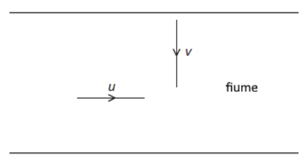
fiume con vettori velocità u e v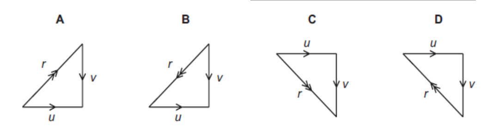
quattro diagrammi vettoriali opzioni A-DTopic: Newtonian Mechanics, Thermodynamics, Electrostatics Metodi: Dimensional Analysis, Free-Body Diagram, Vector Decomposition, Kinematic Equations, Energy Conservation Method, Ideal Gas Law, Hydrostatic Equilibrium, Ray Tracing Competenze: Physical Reasoning, Unit Conversion, Diagrammatic Reasoning Objects: — Fonte: Testo (PDF) — p.2
Question 3. A boat crosses a river perpendicular to the shores at a speed of and is subject to current . What diagram represents the resulting speed ?
river with speed vectors u and v
four options A-D vector diagrams
Topic: Newtonian Mechanics, Thermodynamics, Electrostatics Metodi: Dimensional Analysis, Free-Body Diagram, Vector Decomposition, Kinematic Equations, Energy Conservation Method, Ideal Gas Law, Hydrostatic Equilibrium, Ray Tracing Competenze: Physical Reasoning, Unit Conversion, Diagrammatic Reasoning Objects: — Fonte: Testo (PDF) — p.2
Quesito 4. Il simbolo indica che l’elemento ha:
- A. 37 elettroni e 17 nucleoni
- B. 37 protoni e 17 neutroni
- C. 37 neutroni e 17 elettroni
- D. 37 nucleoni e 17 protoni
Topic: Newtonian Mechanics, Thermodynamics, Electrostatics Metodi: Dimensional Analysis, Free-Body Diagram, Vector Decomposition, Kinematic Equations, Energy Conservation Method, Ideal Gas Law, Hydrostatic Equilibrium, Ray Tracing Competenze: Physical Reasoning, Unit Conversion, Diagrammatic Reasoning Objects: Nucleus Fonte: Testo (PDF) — p.2
Question 4. The symbol indicates that the element has:
- **A ** 37 electrons and 17 nucleons
- B. 37 protons and 17 neutrons
- C. 37 neutrons and 17 electrons
- D. 37 nucleons and 17 protons
Topic: Newtonian Mechanics, Thermodynamics, Electrostatics Metodi: Dimensional Analysis, Free-Body Diagram, Vector Decomposition, Kinematic Equations, Energy Conservation Method, Ideal Gas Law, Hydrostatic Equilibrium, Ray Tracing Competenze: Physical Reasoning, Unit Conversion, Diagrammatic Reasoning Objects: Nucleus Fonte: Testo (PDF) — p.2
Quesito 5. In figura quattro oggetti su superficie piatta, ciascuno con centro di massa M indicato. Quale non è in equilibrio?
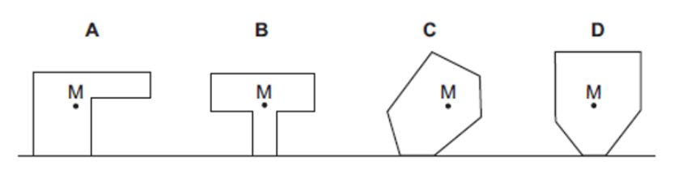
quattro oggetti su superficie piana A-DTopic: Newtonian Mechanics, Thermodynamics, Electrostatics Metodi: Dimensional Analysis, Free-Body Diagram, Vector Decomposition, Kinematic Equations, Energy Conservation Method, Ideal Gas Law, Hydrostatic Equilibrium, Ray Tracing Competenze: Physical Reasoning, Unit Conversion, Diagrammatic Reasoning Objects: — Fonte: Testo (PDF) — p.2
Question 5.Four objects on a flat surface, each with a centre of mass M indicated, are shown in Figure 5. Which one is out of balance?
four objects on a flat surface A-D
Topic: Newtonian Mechanics, Thermodynamics, Electrostatics Metodi: Dimensional Analysis, Free-Body Diagram, Vector Decomposition, Kinematic Equations, Energy Conservation Method, Ideal Gas Law, Hydrostatic Equilibrium, Ray Tracing Competenze: Physical Reasoning, Unit Conversion, Diagrammatic Reasoning Objects: — Fonte: Testo (PDF) — p.2
Quesito 6. Due barili: uno acqua, l’altro olio minerale (). Quale opzione ordina i punti 1, 2, 3, 4 per pressione crescente?
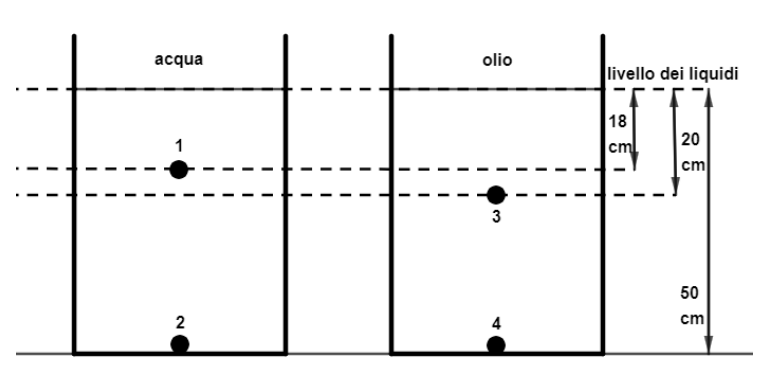
colonne acqua e olio con punti di pressione- A. 1,3,2,4
- B. 1,3,2 o 4 indifferentemente
- C. 3,1,4,2
- D. 3,1,2 o 4 indifferentemente
Topic: Newtonian Mechanics, Thermodynamics, Electrostatics Metodi: Dimensional Analysis, Free-Body Diagram, Vector Decomposition, Kinematic Equations, Energy Conservation Method, Ideal Gas Law, Hydrostatic Equilibrium, Ray Tracing Competenze: Physical Reasoning, Unit Conversion, Diagrammatic Reasoning Objects: Container Fonte: Testo (PDF) — p.2
Quesito 6. Due barili: uno acqua, l’altro olio minerale (). What option does the points 1, 2, 3, 4 order for increasing pressure? I’m going to start with this. water and oil columns with pressure points
- A. 1,3,2,4
- ** B.** 1,3,2 or 4 whether or not
- C. 3,1,4,2
- ** D.** 3,1,2 or 4 whether or not
Topic: Newtonian Mechanics, Thermodynamics, Electrostatics Metodi: Dimensional Analysis, Free-Body Diagram, Vector Decomposition, Kinematic Equations, Energy Conservation Method, Ideal Gas Law, Hydrostatic Equilibrium, Ray Tracing Competenze: Physical Reasoning, Unit Conversion, Diagrammatic Reasoning Objects: Container Fonte: Testo (PDF) — p.2
Quesito 7. A sinistra un barometro a mercurio (colonna cm nel vuoto), a destra un manometro a mercurio con un gas. Qual è la pressione del gas nella parte cieca del tubo a U, in mmHg?
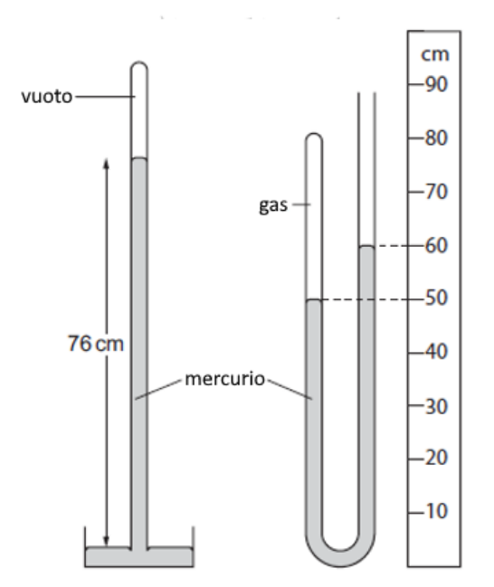
barometro e manometro a mercurio- A. 100 mmHg
- B. 500 mmHg
- C. 660 mmHg
- D. 860 mmHg
Topic: Newtonian Mechanics, Thermodynamics, Electrostatics Metodi: Dimensional Analysis, Free-Body Diagram, Vector Decomposition, Kinematic Equations, Energy Conservation Method, Ideal Gas Law, Hydrostatic Equilibrium, Ray Tracing Competenze: Physical Reasoning, Unit Conversion, Diagrammatic Reasoning Objects: Manometer, Gas Fonte: Testo (PDF) — p.2
Question 7.** A mercury barometer on the left (column cm in the vacuum), a mercury gas pressure gauge on the right. What is the gas pressure in the blind part of the U tube, in mmHg? I’m going to start with this. mercury barometer and manometer
- A. 100 mmHg
- **B ** 500 mmHg
- **C ** 660 mmHg
- **D ** 860 mmHg
Topic: Newtonian Mechanics, Thermodynamics, Electrostatics Metodi: Dimensional Analysis, Free-Body Diagram, Vector Decomposition, Kinematic Equations, Energy Conservation Method, Ideal Gas Law, Hydrostatic Equilibrium, Ray Tracing Competenze: Physical Reasoning, Unit Conversion, Diagrammatic Reasoning Objects: Manometer, Gas Fonte: Testo (PDF) — p.2
Quesito 8. Un ecoscandaglio invia un impulso ricevuto s dopo. Velocità del suono in acqua m/s. Profondità del mare?
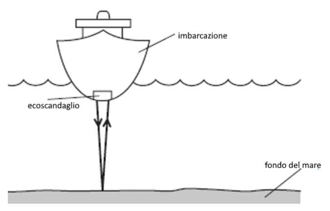
imbarcazione con ecoscandaglio e fondo mare- A. 750 m
- B. 1500 m
- C. 3000 m
- D. 6000 m
Topic: Newtonian Mechanics, Thermodynamics, Electrostatics Metodi: Dimensional Analysis, Free-Body Diagram, Vector Decomposition, Kinematic Equations, Energy Conservation Method, Ideal Gas Law, Hydrostatic Equilibrium, Ray Tracing Competenze: Physical Reasoning, Unit Conversion, Diagrammatic Reasoning Objects: — Fonte: Testo (PDF) — p.2
Question 8. An echo scanner sends a pulse received s later. Sound speed in water m/s. The depths of the sea? I’m going to start with this. boat with ecoscandal and seabed
- A. 750 m
- B. 1500 m
- C. 3000 m
- D. 6000 m
Topic: Newtonian Mechanics, Thermodynamics, Electrostatics Metodi: Dimensional Analysis, Free-Body Diagram, Vector Decomposition, Kinematic Equations, Energy Conservation Method, Ideal Gas Law, Hydrostatic Equilibrium, Ray Tracing Competenze: Physical Reasoning, Unit Conversion, Diagrammatic Reasoning Objects: — Fonte: Testo (PDF) — p.2
Quesito 9. Una sfera di metallo cade dal quinto piano passando davanti a quattro terrazzini J, K, L, M (equidistanti). In quale tratto la velocità è massima e il tempo di attraversamento minimo?
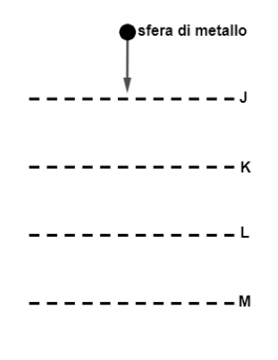
edificio con terrazzini J K L M e sfera- A. v max J-K, t min J-K
- B. v max J-K, t min L-M
- C. v max L-M, t min J-K
- D. v max L-M, t min L-M
Topic: Newtonian Mechanics, Thermodynamics, Electrostatics Metodi: Dimensional Analysis, Free-Body Diagram, Vector Decomposition, Kinematic Equations, Energy Conservation Method, Ideal Gas Law, Hydrostatic Equilibrium, Ray Tracing Competenze: Physical Reasoning, Unit Conversion, Diagrammatic Reasoning Objects: Sphere Fonte: Testo (PDF) — p.2
Question 9. A ball of metal falls from the fifth floor passing in front of four terraces J, K, L, M (equidistant). In which section is the maximum speed and minimum crossing time? I’m going to start with this. building with terraces J K L M and sphere
- A. v max J-K, t min J-K
- B. v max J-K, t min L-M
- C. v max L-M, t min J-K
- D. v max L-M, t min L-M
Topic: Newtonian Mechanics, Thermodynamics, Electrostatics Metodi: Dimensional Analysis, Free-Body Diagram, Vector Decomposition, Kinematic Equations, Energy Conservation Method, Ideal Gas Law, Hydrostatic Equilibrium, Ray Tracing Competenze: Physical Reasoning, Unit Conversion, Diagrammatic Reasoning Objects: Sphere Fonte: Testo (PDF) — p.2
Quesito 10. Corpo A lasciato cadere da m; dopo s il corpo B, dalla stessa altezza, è lanciato verso l’alto con m/s. Quale grafico - rappresenta la situazione?
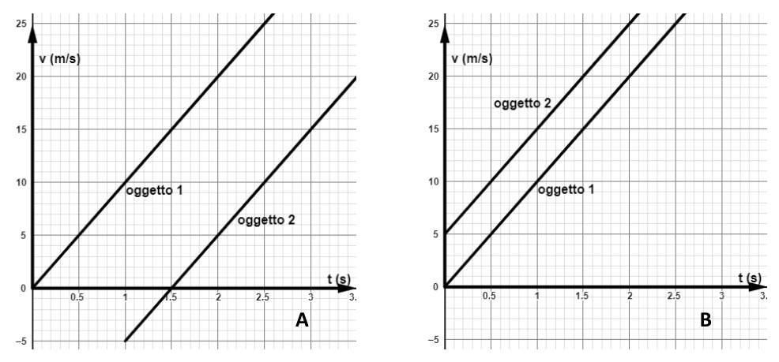
grafici v(t) opzioni A e B per oggetti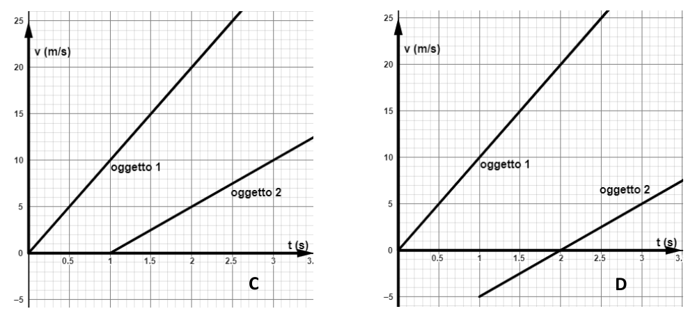
grafici v(t) opzioni C e D per oggettiTopic: Newtonian Mechanics, Thermodynamics, Electrostatics Metodi: Dimensional Analysis, Free-Body Diagram, Vector Decomposition, Kinematic Equations, Energy Conservation Method, Ideal Gas Law, Hydrostatic Equilibrium, Ray Tracing Competenze: Physical Reasoning, Unit Conversion, Diagrammatic Reasoning Objects: — Fonte: Testo (PDF) — p.2
Question 10. Body A dropped from m; after s body B, from the same height, is thrown upwards with m/s. What graph - represents the situation?
graphs v(t) Options A and B for objects
graphs v(t) Options C and D for objects
Topic: Newtonian Mechanics, Thermodynamics, Electrostatics Metodi: Dimensional Analysis, Free-Body Diagram, Vector Decomposition, Kinematic Equations, Energy Conservation Method, Ideal Gas Law, Hydrostatic Equilibrium, Ray Tracing Competenze: Physical Reasoning, Unit Conversion, Diagrammatic Reasoning Objects: — Fonte: Testo (PDF) — p.2
Quesito 11. Una massa di kg è in equilibrio tenuta da una corda su una carrucola senza attrito. Quanto vale la tensione T?
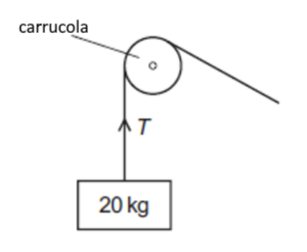
carrucola con massa 20 kg- A. 10 kg
- B. 20 kg
- C. 100 N
- D. 200 N
Topic: Newtonian Mechanics, Thermodynamics, Electrostatics Metodi: Dimensional Analysis, Free-Body Diagram, Vector Decomposition, Kinematic Equations, Energy Conservation Method, Ideal Gas Law, Hydrostatic Equilibrium, Ray Tracing Competenze: Physical Reasoning, Unit Conversion, Diagrammatic Reasoning Objects: Pulley, String, Block Fonte: Testo (PDF) — p.2
Question 11. A mass of kg is balanced by a rope on a frictionless carriage. How much is T-voltage? I’m going to start with this. *carriage with a mass of 20 kg *
- A. 10 kg
- B. 20 kg
- C. 100 N
- D. 200 N
Topic: Newtonian Mechanics, Thermodynamics, Electrostatics Metodi: Dimensional Analysis, Free-Body Diagram, Vector Decomposition, Kinematic Equations, Energy Conservation Method, Ideal Gas Law, Hydrostatic Equilibrium, Ray Tracing Competenze: Physical Reasoning, Unit Conversion, Diagrammatic Reasoning Objects: Pulley, String, Block Fonte: Testo (PDF) — p.2
Quesito 12. Una palla di gomma lanciata verso l’alto mentre sta ancora salendo: quale diagramma descrive le forze (resistenza dell’aria proporzionale alla velocità, trascurando Archimede)?
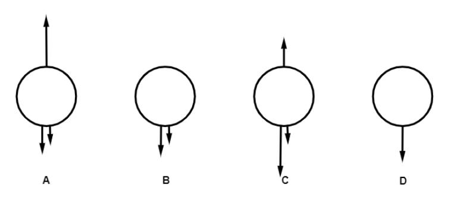
diagrammi forze su palla in volo A-DTopic: Newtonian Mechanics, Thermodynamics, Electrostatics Metodi: Dimensional Analysis, Free-Body Diagram, Vector Decomposition, Kinematic Equations, Energy Conservation Method, Ideal Gas Law, Hydrostatic Equilibrium, Ray Tracing Competenze: Physical Reasoning, Unit Conversion, Diagrammatic Reasoning Objects: Ball Fonte: Testo (PDF) — p.2
Question 12. A rubber ball thrown upwards while still climbing: what diagram describes the forces (air resistance proportional to speed, neglecting Archimedes)?
force diagrams on ball in flight A-D
Topic: Newtonian Mechanics, Thermodynamics, Electrostatics Metodi: Dimensional Analysis, Free-Body Diagram, Vector Decomposition, Kinematic Equations, Energy Conservation Method, Ideal Gas Law, Hydrostatic Equilibrium, Ray Tracing Competenze: Physical Reasoning, Unit Conversion, Diagrammatic Reasoning Objects: Ball Fonte: Testo (PDF) — p.2
Quesito 13. Una paracadutista scende a velocità limite, poi apre il paracadute. Direzione del moto e dell’accelerazione subito dopo l’apertura?
- A. basso/basso
- B. basso/alto
- C. alto/basso
- D. alto/alto
Topic: Newtonian Mechanics, Thermodynamics, Electrostatics Metodi: Dimensional Analysis, Free-Body Diagram, Vector Decomposition, Kinematic Equations, Energy Conservation Method, Ideal Gas Law, Hydrostatic Equilibrium, Ray Tracing Competenze: Physical Reasoning, Unit Conversion, Diagrammatic Reasoning Objects: — Fonte: Testo (PDF) — p.2
Question 13. A parachutist descends at the speed limit, then opens the parachute. Motorcycle direction and acceleration right after opening?
- A. low/low
- B. low/high
- C. high/low
- D. high/high
Topic: Newtonian Mechanics, Thermodynamics, Electrostatics Metodi: Dimensional Analysis, Free-Body Diagram, Vector Decomposition, Kinematic Equations, Energy Conservation Method, Ideal Gas Law, Hydrostatic Equilibrium, Ray Tracing Competenze: Physical Reasoning, Unit Conversion, Diagrammatic Reasoning Objects: — Fonte: Testo (PDF) — p.2
Quesito 14. Samantha Cristoforetti sulla ISS è soggetta alla gravità terrestre. Come cambiano massa e peso rispetto alla superficie?
- A. massa decresce / peso decresce
- B. decresce / non cambia
- C. non cambia / decresce
- D. non cambia / non cambia
Topic: Newtonian Mechanics, Thermodynamics, Electrostatics Metodi: Dimensional Analysis, Free-Body Diagram, Vector Decomposition, Kinematic Equations, Energy Conservation Method, Ideal Gas Law, Hydrostatic Equilibrium, Ray Tracing Competenze: Physical Reasoning, Unit Conversion, Diagrammatic Reasoning Objects: Satellite, Planet Fonte: Testo (PDF) — p.2
Question 14. Samantha Cristoforetti on the ISS is subject to Earth’s gravity. How do they change mass and weight relative to the surface?
- A. weight decreases / weight decreases
- B. decreases / does not change
- C. does not change / decrease
- D. does not change / does not change
Topic: Newtonian Mechanics, Thermodynamics, Electrostatics Metodi: Dimensional Analysis, Free-Body Diagram, Vector Decomposition, Kinematic Equations, Energy Conservation Method, Ideal Gas Law, Hydrostatic Equilibrium, Ray Tracing Competenze: Physical Reasoning, Unit Conversion, Diagrammatic Reasoning Objects: Satellite, Planet Fonte: Testo (PDF) — p.2
Quesito 15. Una gru impiega minuti per sollevare un carico; la variazione di energia potenziale è kJ. Qual è la potenza utile?
- A. 3,0 kW
- B. 180 kW
- C. 720 kW
- D. 43200 kW
Topic: Newtonian Mechanics, Thermodynamics, Electrostatics Metodi: Dimensional Analysis, Free-Body Diagram, Vector Decomposition, Kinematic Equations, Energy Conservation Method, Ideal Gas Law, Hydrostatic Equilibrium, Ray Tracing Competenze: Physical Reasoning, Unit Conversion, Diagrammatic Reasoning Objects: — Fonte: Testo (PDF) — p.2
Question 15. ** A crane takes minutes to lift a load; the potential energy change is kJ. What’s the utility?
- A. 3,0 kW
- B. 180 kW
- C. 720 kW
- D. 43200 kW
Topic: Newtonian Mechanics, Thermodynamics, Electrostatics Metodi: Dimensional Analysis, Free-Body Diagram, Vector Decomposition, Kinematic Equations, Energy Conservation Method, Ideal Gas Law, Hydrostatic Equilibrium, Ray Tracing Competenze: Physical Reasoning, Unit Conversion, Diagrammatic Reasoning Objects: — Fonte: Testo (PDF) — p.2
Quesito 16. Due operai sollevano casse con un nastro trasportatore; aumentano la velocità del nastro per sollevare più casse in pari tempo. Come cambiano lavoro fatto e potenza erogata?
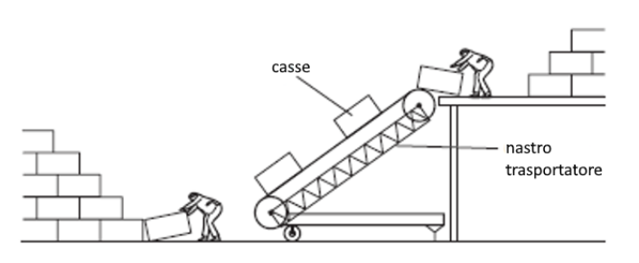
nastro trasportatore con casse e operai- A. lavoro cresce / potenza cresce
- B. cresce / decresce
- C. inalterato / cresce
- D. inalterato / decresce
Topic: Newtonian Mechanics, Thermodynamics, Electrostatics Metodi: Dimensional Analysis, Free-Body Diagram, Vector Decomposition, Kinematic Equations, Energy Conservation Method, Ideal Gas Law, Hydrostatic Equilibrium, Ray Tracing Competenze: Physical Reasoning, Unit Conversion, Diagrammatic Reasoning Objects: — Fonte: Testo (PDF) — p.2
Question 16. Two workers lift cases with a conveyor belt; they increase the speed of the tape to lift several cases at the same time. How do work done and power delivered change? I’m going to start with this. carrier belt with cashiers and workers
- A. work increases / power increases
- B. increases/ decreases
- C. unchanged / growing
- D. unchanged / decreases
Topic: Newtonian Mechanics, Thermodynamics, Electrostatics Metodi: Dimensional Analysis, Free-Body Diagram, Vector Decomposition, Kinematic Equations, Energy Conservation Method, Ideal Gas Law, Hydrostatic Equilibrium, Ray Tracing Competenze: Physical Reasoning, Unit Conversion, Diagrammatic Reasoning Objects: — Fonte: Testo (PDF) — p.2
Quesito 17. Qual è il segno del lavoro della forza peso se una palla si muove prima verso l’alto e poi verso il basso?
- A. prima negativo poi positivo
- B. prima positivo poi negativo
- C. prima positivo poi nullo
- D. prima negativo poi nullo
Topic: Newtonian Mechanics, Thermodynamics, Electrostatics Metodi: Dimensional Analysis, Free-Body Diagram, Vector Decomposition, Kinematic Equations, Energy Conservation Method, Ideal Gas Law, Hydrostatic Equilibrium, Ray Tracing Competenze: Physical Reasoning, Unit Conversion, Diagrammatic Reasoning Objects: Ball Fonte: Testo (PDF) — p.2
Question 17. What is the sign of the force of gravity working if a ball moves first upwards and then downwards?
- A. first negative then positive
- B. first positive then negative
- C. first positive then zero
- D. first negative then zero
Topic: Newtonian Mechanics, Thermodynamics, Electrostatics Metodi: Dimensional Analysis, Free-Body Diagram, Vector Decomposition, Kinematic Equations, Energy Conservation Method, Ideal Gas Law, Hydrostatic Equilibrium, Ray Tracing Competenze: Physical Reasoning, Unit Conversion, Diagrammatic Reasoning Objects: Ball Fonte: Testo (PDF) — p.2
Quesito 18. Una palla cade e rimbalza su una superficie rigida raggiungendo altezza inferiore: perché l’energia potenziale è minore?
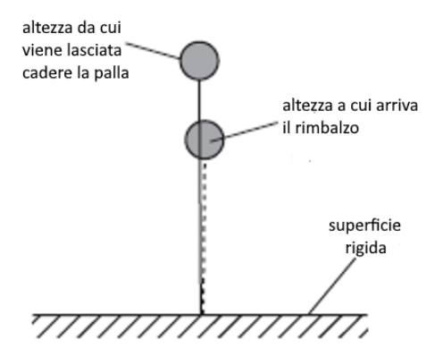
palla rimbalzante su superficie rigida- A. distrutta nel rimbalzo
- B. distrutta per attrito con l’aria
- C. aumenta l’energia potenziale della superficie
- D. aumenta l’energia interna sua e dell’ambiente
Topic: Newtonian Mechanics, Thermodynamics, Electrostatics Metodi: Dimensional Analysis, Free-Body Diagram, Vector Decomposition, Kinematic Equations, Energy Conservation Method, Ideal Gas Law, Hydrostatic Equilibrium, Ray Tracing Competenze: Physical Reasoning, Unit Conversion, Diagrammatic Reasoning Objects: Ball Fonte: Testo (PDF) — p.2
Question 18. A ball falls and bounces over a rigid surface reaching a lower height: why is the potential energy lower? I’m going to start with this. bouncing ball on a rigid surface
- A. destroyed in the rebound
- B. destroyed by air friction
- C. increases the potential energy of the surface
- D. increases its internal energy and the environment
Topic: Newtonian Mechanics, Thermodynamics, Electrostatics Metodi: Dimensional Analysis, Free-Body Diagram, Vector Decomposition, Kinematic Equations, Energy Conservation Method, Ideal Gas Law, Hydrostatic Equilibrium, Ray Tracing Competenze: Physical Reasoning, Unit Conversion, Diagrammatic Reasoning Objects: Ball Fonte: Testo (PDF) — p.2
Quesito 19. Quale opzione presenta due fenomeni descritti da onde trasversali?
- A. oggetto su molla, suono
- B. luce, corda di chitarra
- C. suono, luce
- D. oggetto su molla, corda di chitarra
Topic: Newtonian Mechanics, Thermodynamics, Electrostatics Metodi: Dimensional Analysis, Free-Body Diagram, Vector Decomposition, Kinematic Equations, Energy Conservation Method, Ideal Gas Law, Hydrostatic Equilibrium, Ray Tracing Competenze: Physical Reasoning, Unit Conversion, Diagrammatic Reasoning Objects: Spring, String Fonte: Testo (PDF) — p.2
Question 19.Which option has two phenomena described by cross-wave?
- A. object on the spring, sound
- **B ** light, guitar string
- C. sound, light
- D. object on spring, guitar string
Topic: Newtonian Mechanics, Thermodynamics, Electrostatics Metodi: Dimensional Analysis, Free-Body Diagram, Vector Decomposition, Kinematic Equations, Energy Conservation Method, Ideal Gas Law, Hydrostatic Equilibrium, Ray Tracing Competenze: Physical Reasoning, Unit Conversion, Diagrammatic Reasoning Objects: Spring, String Fonte: Testo (PDF) — p.2
Quesito 20. Valore approssimato della velocità del suono in aria a pressione normale e °C?
- A. 340 m/s
- B. 34000 m/s
- C. 340 km/s
- D. m/s
Topic: Newtonian Mechanics, Thermodynamics, Electrostatics Metodi: Dimensional Analysis, Free-Body Diagram, Vector Decomposition, Kinematic Equations, Energy Conservation Method, Ideal Gas Law, Hydrostatic Equilibrium, Ray Tracing Competenze: Physical Reasoning, Unit Conversion, Diagrammatic Reasoning Objects: — Fonte: Testo (PDF) — p.2
Question 20. Approximate value of the sound speed in normal pressure air and °C?
- A. 340 m/s
- B. 34000 m/s
- C. 340 km/s
- D. m/s
Topic: Newtonian Mechanics, Thermodynamics, Electrostatics Metodi: Dimensional Analysis, Free-Body Diagram, Vector Decomposition, Kinematic Equations, Energy Conservation Method, Ideal Gas Law, Hydrostatic Equilibrium, Ray Tracing Competenze: Physical Reasoning, Unit Conversion, Diagrammatic Reasoning Objects: — Fonte: Testo (PDF) — p.2
Quesito 21. Un oggetto O davanti a una lente convergente; I è la sua immagine. Quale affermazione è corretta?
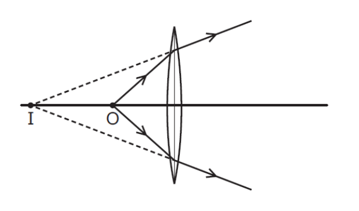
lente convergente con raggi e immagine I- A. immagine rimpicciolita
- B. capovolta
- C. reale
- D. virtuale
Topic: Newtonian Mechanics, Thermodynamics, Electrostatics Metodi: Dimensional Analysis, Free-Body Diagram, Vector Decomposition, Kinematic Equations, Energy Conservation Method, Ideal Gas Law, Hydrostatic Equilibrium, Ray Tracing Competenze: Physical Reasoning, Unit Conversion, Diagrammatic Reasoning Objects: Lens Fonte: Testo (PDF) — p.2
Question 21. An object O in front of a convergent lens; I is its image. What statement is correct? I’m going to start with this. converging lens with beams and image I
- A. shortened image
- B. upside down
- C. real
- D. Virtual
Topic: Newtonian Mechanics, Thermodynamics, Electrostatics Metodi: Dimensional Analysis, Free-Body Diagram, Vector Decomposition, Kinematic Equations, Energy Conservation Method, Ideal Gas Law, Hydrostatic Equilibrium, Ray Tracing Competenze: Physical Reasoning, Unit Conversion, Diagrammatic Reasoning Objects: Lens Fonte: Testo (PDF) — p.2
Quesito 22. Un ingegnere deve fissare una rondella d’acciaio all’estremità di un tubo cilindrico dello stesso metallo; la sezione del cilindro è leggermente maggiore del foro. Come operare?
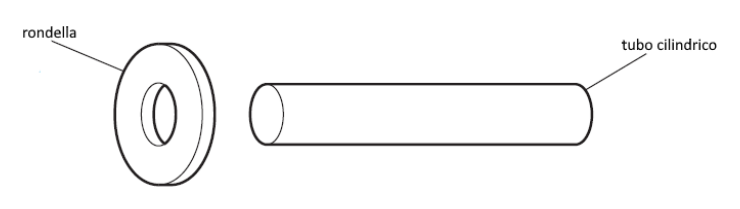
rondella e tubo cilindrico- A. raffreddare la rondella, poi infilare il cilindro
- B. raffreddare la rondella e il cilindro, infilarli
- C. riscaldare il cilindro e inserirlo nel foro
- D. riscaldare la rondella, poi infilare il cilindro
Topic: Newtonian Mechanics, Thermodynamics, Electrostatics Metodi: Dimensional Analysis, Free-Body Diagram, Vector Decomposition, Kinematic Equations, Energy Conservation Method, Ideal Gas Law, Hydrostatic Equilibrium, Ray Tracing Competenze: Physical Reasoning, Unit Conversion, Diagrammatic Reasoning Objects: Tube Fonte: Testo (PDF) — p.2
Question 22. An engineer must attach a steel spindle to the end of a cylindrical tube of the same metal; the section of the cylinder is slightly larger than the hole. How to operate? I’m going to start with this. round and cylindrical tube
- A. cool the sponge, then insert the cylinder
- **B ** cool the spindle and cylinder, insert them
- C. heat the cylinder and insert it into the hole
- D. heat the spindle, then insert the cylinder
Topic: Newtonian Mechanics, Thermodynamics, Electrostatics Metodi: Dimensional Analysis, Free-Body Diagram, Vector Decomposition, Kinematic Equations, Energy Conservation Method, Ideal Gas Law, Hydrostatic Equilibrium, Ray Tracing Competenze: Physical Reasoning, Unit Conversion, Diagrammatic Reasoning Objects: Tube Fonte: Testo (PDF) — p.2
Quesito 23. Uno studente vuole calcolare il calore specifico del rame; ha cilindretto di rame, riscaldatore elettrico (potenza nota) e calorimetro. Di quali altri dispositivi ha bisogno (bilancia / cronometro / termometro)?
- A. sì/sì/sì
- B. sì/sì/no
- C. sì/no/sì
- D. no/sì/sì
Topic: Newtonian Mechanics, Thermodynamics, Electrostatics Metodi: Dimensional Analysis, Free-Body Diagram, Vector Decomposition, Kinematic Equations, Energy Conservation Method, Ideal Gas Law, Hydrostatic Equilibrium, Ray Tracing Competenze: Physical Reasoning, Unit Conversion, Diagrammatic Reasoning Objects: Cylinder, Calorimeter Fonte: Testo (PDF) — p.2
Question 23. A student wants to calculate the specific heat of copper; he has a copper cylinder, electric heater (power known) and calorimeter. What other devices (balance sheet / timing / thermometer) do you need?
- A. sì/sì/sì
- B. sì/sì/no
- C. sì/no/sì
- D. no/sì/sì
Topic: Newtonian Mechanics, Thermodynamics, Electrostatics Metodi: Dimensional Analysis, Free-Body Diagram, Vector Decomposition, Kinematic Equations, Energy Conservation Method, Ideal Gas Law, Hydrostatic Equilibrium, Ray Tracing Competenze: Physical Reasoning, Unit Conversion, Diagrammatic Reasoning Objects: Cylinder, Calorimeter Fonte: Testo (PDF) — p.2
Quesito 24. Una bombola sigillata di gas tenuta al sole; la temperatura aumenta. Cosa avviene a velocità media delle molecole e pressione?
- A. decresce/decresce
- B. decresce/aumenta
- C. aumenta/decresce
- D. aumenta/aumenta
Topic: Newtonian Mechanics, Thermodynamics, Electrostatics Metodi: Dimensional Analysis, Free-Body Diagram, Vector Decomposition, Kinematic Equations, Energy Conservation Method, Ideal Gas Law, Hydrostatic Equilibrium, Ray Tracing Competenze: Physical Reasoning, Unit Conversion, Diagrammatic Reasoning Objects: Gas, Container Fonte: Testo (PDF) — p.2
Question 24. A sealed gas canister held in the sun; the temperature rises. What happens to the average speed of molecules and pressure?
- A. decreases/decreases
- B. decreases/increases
- C. increases/ decreases
- D. increases/increases
Topic: Newtonian Mechanics, Thermodynamics, Electrostatics Metodi: Dimensional Analysis, Free-Body Diagram, Vector Decomposition, Kinematic Equations, Energy Conservation Method, Ideal Gas Law, Hydrostatic Equilibrium, Ray Tracing Competenze: Physical Reasoning, Unit Conversion, Diagrammatic Reasoning Objects: Gas, Container Fonte: Testo (PDF) — p.2
Quesito 25. Sfilando un maglione i capelli si sollevano. Una volta tolto il maglione:
- A. maglione e capelli stessa carica
- B. maglione neutro, capelli cariche opposte
- C. maglione neutro, capelli stessa carica
- D. maglione carica opposta ai capelli
Topic: Newtonian Mechanics, Thermodynamics, Electrostatics Metodi: Dimensional Analysis, Free-Body Diagram, Vector Decomposition, Kinematic Equations, Energy Conservation Method, Ideal Gas Law, Hydrostatic Equilibrium, Ray Tracing Competenze: Physical Reasoning, Unit Conversion, Diagrammatic Reasoning Objects: — Fonte: Testo (PDF) — p.2
The hair is lifted when you shave a sweater. Once I take off my sweater:
- A. Shorts and hair of the same weight
- B. neutral sweater, with opposite loads of hair
- C. neutral sweater, with the same load of hair
- D. sweater with a load on the opposite side of the hair
Topic: Newtonian Mechanics, Thermodynamics, Electrostatics Metodi: Dimensional Analysis, Free-Body Diagram, Vector Decomposition, Kinematic Equations, Energy Conservation Method, Ideal Gas Law, Hydrostatic Equilibrium, Ray Tracing Competenze: Physical Reasoning, Unit Conversion, Diagrammatic Reasoning Objects: — Fonte: Testo (PDF) — p.2
Quesito 26. Circuito con tre lampadine e tre interruttori. Quale affermazione è corretta riguardo a quale lampada possa restare accesa con un interruttore aperto?
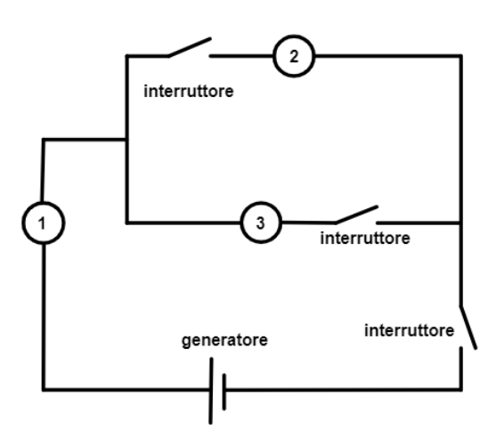
circuito con lampadine e interruttori- A. qualunque sia l’interruttore aperto, la lampadina 1 rimane accesa
- B. qualunque interruttore aperto, lampadina 1 spenta
- C. è possibile rimanga accesa solo la lampadina 1
- D. non è possibile rimanga accesa solo la lampadina 1
Topic: Newtonian Mechanics, Thermodynamics, Electrostatics Metodi: Dimensional Analysis, Free-Body Diagram, Vector Decomposition, Kinematic Equations, Energy Conservation Method, Ideal Gas Law, Hydrostatic Equilibrium, Ray Tracing Competenze: Physical Reasoning, Unit Conversion, Diagrammatic Reasoning Objects: Switch, Wire Fonte: Testo (PDF) — p.2
Quesito 26. Circuito con tre lampadine e tre interruttori. What statement is correct as to which lamp may remain on with an open switch? I’m going to start with this. circuit with lamps and switches
- A. whatever the switch is open, the lamp 1 remains on
- B. any switch open, lamp 1 off
- C. only the lamp 1 may remain on
- D. can’t keep only the lamp 1 on
Topic: Newtonian Mechanics, Thermodynamics, Electrostatics Metodi: Dimensional Analysis, Free-Body Diagram, Vector Decomposition, Kinematic Equations, Energy Conservation Method, Ideal Gas Law, Hydrostatic Equilibrium, Ray Tracing Competenze: Physical Reasoning, Unit Conversion, Diagrammatic Reasoning Objects: Switch, Wire Fonte: Testo (PDF) — p.2
Quesito 27. (Comprensione del testo) Articolo sulla ricerca di esopianeti e super-Terre; quale affermazione si può dedurre dal testo? [testo di astrofisica con 4 opzioni A-D]
Topic: Newtonian Mechanics, Thermodynamics, Electrostatics Metodi: Dimensional Analysis, Free-Body Diagram, Vector Decomposition, Kinematic Equations, Energy Conservation Method, Ideal Gas Law, Hydrostatic Equilibrium, Ray Tracing Competenze: Physical Reasoning, Unit Conversion, Diagrammatic Reasoning Objects: Planet Fonte: Testo (PDF) — p.2
Question 27. (Comprehension of the text) Article on the search for exoplanets and super-Earths; what statement can be drawn from the text? [astrophysics text with 4 options A-D]
Topic: Newtonian Mechanics, Thermodynamics, Electrostatics Metodi: Dimensional Analysis, Free-Body Diagram, Vector Decomposition, Kinematic Equations, Energy Conservation Method, Ideal Gas Law, Hydrostatic Equilibrium, Ray Tracing Competenze: Physical Reasoning, Unit Conversion, Diagrammatic Reasoning Objects: Planet Fonte: Testo (PDF) — p.2
Riscaldamento dell’etanolo (problema 1x3)
Quesito a risposta aperta (vale come tre quesiti).
Un contenitore chiuso di capacità L contiene g di etanolo () che si trova parzialmente allo stato solido e parzialmente a quello liquido. L’etanolo viene scaldato fornendo energia a ritmo costante. Il grafico mostra come varia la sua temperatura nel tempo. Dati: calore specifico dell’etanolo liquido J/(g·K); calore latente di fusione J/g; massa molare g/mol.
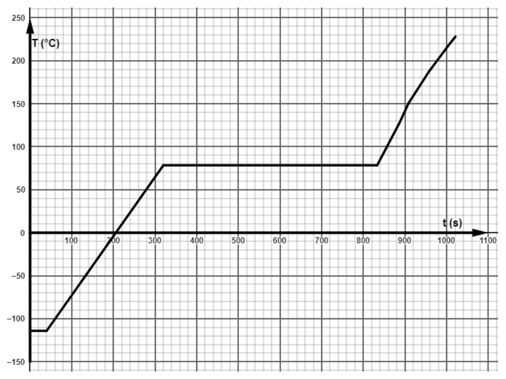
grafico T(°C) vs t(s) etanolo riscaldatoa) Qual è la temperatura di fusione? E quella di ebollizione? b) Descrivi lo stato dell’etanolo e la sua temperatura dopo s, s, s e s. c) Perché in alcuni tratti la temperatura non aumenta? d) Qual è il calore fornito durante la fase liquida della sostanza? e) Quant’è la potenza del riscaldatore? f) Qual è il calore latente di evaporazione? g) Quanta energia viene fornita nella fase di fusione? h) Verifica che la sostanza si trova inizialmente parzialmente liquida e parzialmente solida e spiega il ragionamento. i) Quanta era la sostanza allo stato solido all’inizio? j) Di quante moli è costituito il campione nel cilindro? k) Qual è la pressione del gas alla temperatura di °C? ( (L·atm)/(mol·K) J/(mol·K)) l) L’ultimo tratto del grafico non è lineare pur restando costante la potenza fornita: a cosa è dovuto?
Topic: Thermodynamics, Kinetic Theory Metodi: First Law of Thermodynamics, Ideal Gas Law, Experimental Data Analysis, Physical Modeling Competenze: Experimental Data Analysis, Graph Linearization, Physical Reasoning Objects: Gas, Container Fonte: Testo (PDF) — p.13
Riscaldamento dell’etanolo (problema 1x3)
Open-ended question (equivalent to three questions).
A closed container with a capacity L contains g of ethanol () which is partly solid and partly liquid. Ethanol is heated to provide energy at a constant rate. The graph shows how its temperature changes over time. The data are: specific heat of liquid ethanol J/(g·K; latent heat of fusion J/g; molar mass g/mol. I’m going to start with this. grafico T(°C) vs t(s) etanolo riscaldato
a) Qual è la temperatura di fusione? What about the boiling? **b) ** Describe the state of ethanol and its temperature after s, s, s and s. c) Perché in alcuni tratti la temperatura non aumenta? **d) ** What is the heat supplied during the liquid phase of the substance? **e) ** What is the heater power? **f) ** What is the latent heat of evaporation? **g) ** How much energy is supplied during the melting phase? **h) ** Verifies that the substance is initially partially liquid and partially solid and explains the reasoning. i) Quanta era la sostanza allo stato solido all’inizio? **j) ** How many moles is the sample in the cylinder? **k) ** What is the gas pressure at °C? ( (L·atm)/(mol·K) J/(mol·K)) l) L’ultimo tratto del grafico non è lineare pur restando costante la potenza fornita: a cosa è dovuto?
Topic: Thermodynamics, Kinetic Theory Metodi: First Law of Thermodynamics, Ideal Gas Law, Experimental Data Analysis, Physical Modeling Competenze: Experimental Data Analysis, Graph Linearization, Physical Reasoning Objects: Gas, Container Fonte: Testo (PDF) — p.13